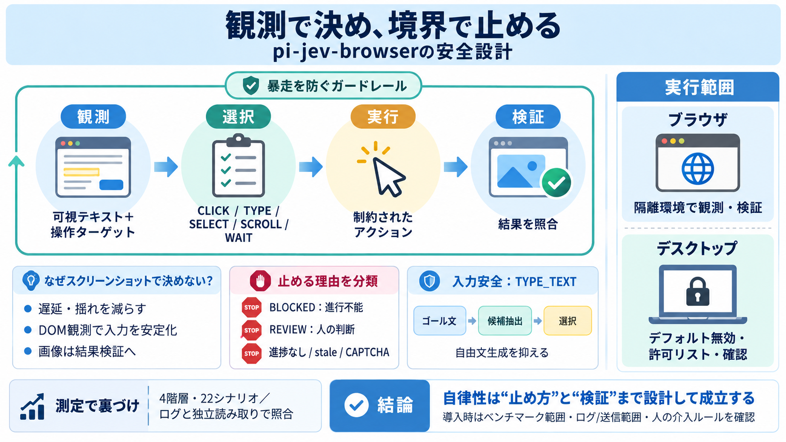

How to Install Playwright: A Comprehensive Guide for 2026
Ensure macOS 12+ and Node.js 18+ are installed. Use Terminal to initialize a project (npm init playwright@latest) or ins…

pi（TypeSafe System One）のブラウザ/デスクトップ操作エージェントは、「DOM等の構造化観測で意思決定し、停止と検証の境界で暴走を抑える」ことを中核に作られています。
ステップごとにスクリーンショットへ依存すると、遅延・不確実性・入力の揺れが意思決定に混ざります。pi-jev-browserは、DOM等の観測情報を構造化して行動選択します。
pi-jev-browserは“完全自動”ではなく、観測→判断→実行のループに、停止・承認・検証のガードレールを埋め込みます。事故は「暴走」ではなく「境界が欠ける」ことで起きる、という前提です。
意思決定はTypeSafeへの「選択肢質問」で行い、スクリーンショットを推論入力にしない設計です。次のアクションは固定の行動カテゴリから選びます。
目標に対して“何を入力するか”も制約され、TYPE_TEXTはゴール文から候補抽出が基本です（必要時のみ補完）。
進捗なし、状態の陳腐化（stale observations）、繰り返し、検証が必要などをstopReasonとして整理し、暴走しにくくします。REVIEWとBLOCKEDは役割が異なります。
ブラウザ操作とmacOSデスクトップ操作では前提が違います。ブラウザは隔離環境で比較的閉じ、デスクトップはデフォルト無効で強いゲートが必要です。
TYPE_TEXTは任意に文章を作るのではなく、原則としてゴール文から候補を抽出して選びます。候補がない場合のみpiモデルで補完し、形式不一致は入力されません。
ただし機微情報が“完全にマスクされる”とは限らず、運用ではログ/送信範囲にも注意が必要です。
READMEの主張は理念だけでなく、複数シナリオのベンチマークで裏付けられています。デモ通りに動くかではなく「実際に何をしたか」を測る方針です。
理解の入口は「ツール実行」「状態観測→意思決定→実行→検証」「人間の承認（review/verification gate）」です。これが“いつ止まるか”を決めます。
CAPTCHAやGoogle等の自動アクセス制限には対応しません。必要な場合は初回観測時点で停止し、ユーザーが解決してから続行する流れです。
その場でブラウザを開いた状態になるため、解決を待つ運用が想定されています。
pi-jev-browserは「停止・検証の境界」を最初から前提化しており堅い一方、性能（速度/失敗率の分布）や情報取り扱い運用には追加確認が必要です。
pi-jev-browserの本質は「観測ベースで意思決定する」ことと同じくらい、「いつ・なぜ止めるか」と「何で検証するか」を設計の中心に置く点です。導入はベンチマークの範囲と運用ルールを確認して進めるのが安全です。
（必要なら次に：benchmarks/README.md の表と失敗要因を精査して、あなたの運用条件に当てはめてください。）
Ensure macOS 12+ and Node.js 18+ are installed. Use Terminal to initialize a project (npm init playwright@latest) or ins…
playwright.yml ``` name: Accessibility Tests on:[push, pull_request] jobs: a11y:runs-on:ubuntu-latest steps: - uses:act…
Playwright downloads required browser binaries and creates the scaffold below. ``` playwright.config.ts # Test…
### Common issues (troubleshooting) Timeout errors: Increase navigation timeout with `--timeout-navigation 90000` (90 s…
``` - name: Install Playwright Browsers - name: Install Playwright Browsers run: | run: | npx playwright install ch…